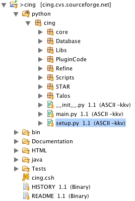

Make sure you have the unstable trees in your /sw/etc/fink.conf too. I had to add:
/unstable/main and /unstable/finkand do:
fink selfupdate
fink install matplotlib-py25Note that this also installs the python 2.5 numeric dependencies. You might have to make a single change in something like line 508 of:
/sw/lib/python2.5/site-packages/matplotlib/backends/backend_pdf.py from:
unicode = cp1252.decoding_map[charcode] or 0to:
unicode = 0This was reported and fixed. In Matlibplot version: 0.98.3-1 tested the problem is gone. See here.
Another thing to worry about is the settings in .matplotlib/matplotlibrc (Which I had to create from example). Make sure the back end set here allows rendering without going to an X server. So perhaps you need to create the file and then change from:
backend : GTKAggto:
backend : AggSee this discussion. Another note here: watch out for on JFD's mac the X server gets opened on request by any process asking for it. This might limit application as a headless tool and was overcome by setting the variables in the above rc file:
backend : Agg
numerix : numpy # important for other deps.Finally create a symlink for python in order to override macs:
interactive : False
cd /sw/bin; ln -s python2.5 python
fink install cython-py25This package has been absent at times but was installed to: Cython-0.9.6.13.1-py2.5.egg-info. Strange.
fink install gawk
fink install imagemagick
fink install povray
fink install ipython-py25
http://sourceforge.net/projects/ccpn
http://code.google.com/p/wattos/
From http://swift.cmbi.kun.nl/whatif/Edit the Whati If installation dir in the 2 files (3 lines) below
./DO_WHATIF.COM:DIR=/Users/jd/workspace34/whatif
./WHATIF.FIG:/Users/jd/workspace34/whatif/dbdata/
./WHATIF.FIG:/Users/jd/workspace34/whatif/qualty/
Note that compilation with macports gcc42 gfortran: /opt/local/bin/gfortran-mp-4.2 works for compiling what if.
This is of course redundant with the fink setup but macports didn't have all required packages last time JFD checked (winter '07).
Found the dep by:
port provides /opt/local/lib/gcc42/libgfortran.2.dylib
From http://nmr.cit.nih.gov/xplor-nih/
Google it. Or get a copy from JFD which works except for the last lines in the summary file.
From http://code.google.com/p/faquad/
fink install pymol-py25
Google it. Or get a copy from JFD which runs fine headless.
Always start from command line instead of Dock/Taskbar so that it gets your environment settings such as PRODIR for the PROCHECK_NMR installation.
CING is being developed on Eclipse 3.4 with PyDev Extensions for automatic code analysis and organization. ShellEd can be used in eclipse but version 1.0.3 fails whereas 1.0.2 works fine.
Register with google code to get a user account. Configure Eclipse for SVN; for 3.4 follow instructions from: http://blog.punchbarrel.com/2008/06/30/using-the-new-subversion-integration-in-eclipse-ganymede/
Check out the CING project from SVN in Eclipse.
This is a two wizard step process; first the SVN then the Pydev wizard.

The project tree with the python code expanded should look something like:

Add the local python dir to your PYTHONPATH inside Eclipse. The CCPN is mandatory but the Wattos python dir is really optional.

Use the svn properties browser to set the executable bit as per below.